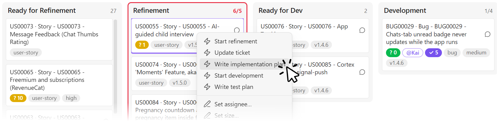
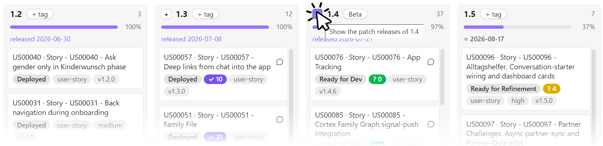
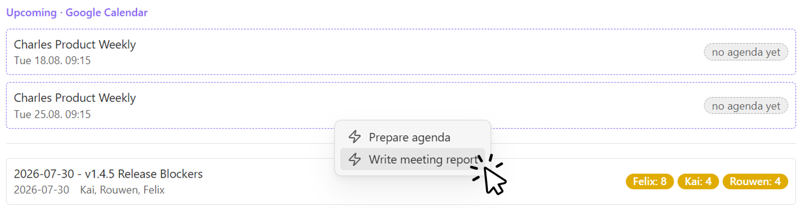
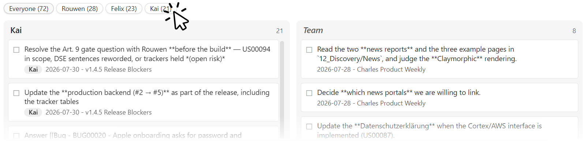

Overview
Dispatch turns a folder of markdown notes into a live project board — and every card on it into a launcher for a coding agent.
Two primitives carry the whole plugin:
- Boards — views over note frontmatter. Drag a card, and the frontmatter is written immediately. There is no separate database; the notes are the board, so everything a board shows is greppable, diffable and syncable.
- Chips — buttons that launch an agent (Claude Code, Codex, any CLI) in the right repository, with the ticket as context. The board knows what the agent is doing; the note keeps what it did.
Four tabs sit above the board. Kanban and Release Plan are always there; Meetings and Todos appear once you point at their folders. A ⟳ button re-reads settings and rescans the vault — use it after a git pull or an agent run rather than restarting Obsidian.
Which frontmatter properties drive all this is up to you; see page-types.md for the contract, and installation.md for where each setting lives.
Kanban board#
Columns are the values of your status property, in the order you configure — which means the column order is your pipeline, and Dispatch never invents one for you. A status found in a note but not configured shows up as an extra column at the end, so nothing silently disappears.

- Drag between columns to change status; drag within a column to change priority. Order is data: it's written back into a
rankproperty with gaps of 1024 and midpoint inserts, so a reorder normally rewrites only the moved note. - Cards show what you configure: a title (optionally prefixed by the ticket
id), badges for any property (type, priority, size), an accent-outlined@Namefor the assignee, and a chat icon linking to the discussion thread. - Three counters get their own badges because they gate the workflow rather than describe it:
? Nfor open refinement questions (amber → green at 0),⚠ Nfor blocking findings from the last code review (red → green at 0) and✓ Nfor open manual test items (purple → green at 0). Green means build-ready, review-ready and sign-off-ready respectively. An empty counter is not a green one — an empty⚠means no review has run, an empty✓means no test plan has been written — so the badge is absent rather than reassuring. - A ⚠ problems panel lists cards missing required properties, carrying unrendered template stubs, or using a status that isn't a column — malformed tickets surface the moment they appear.
- Right-click a card for its chips, or to edit size and badge properties inline.
- Click a column header for batch chips: one agent session working through every ticket in that column in sequence.
- WIP limits per column: the header shows
count/limit, and the column outlines amber at the limit, red above it. - Keyboard: click a card to focus it and open its note; back on the board, arrows move focus,
Enter/oopens the note,[/]move the focused card one column left or right — they do nothing when no card shows the focus outline.
Release Plan#
The same cards, grouped by target version instead of status. Dragging a card between columns changes only the version — never its status or its Kanban rank. With a release order property configured, it also sets the card's place in the column (see below).

- Version columns are keyed by
major.minor, sov1.2.0,1.2.0and1.2.1all land in the same1.2column. Inconsistent formatting in your notes doesn't split a milestone. - Planned versions are always shown, even when empty — that's how you plan a release before any ticket is assigned to it. Non-version planned values ("Icebox") become special columns on the left.
- A drop writes one convention. Dropping a card on a version line writes that line's highest known patch as
vMAJOR.MINOR.PATCH—v1.2.3if any card or planned entry already targets it,v1.2.0if none names a patch — whether the column was planned or appeared from the cards. A card dropped back on its own line keeps whatever it had. - An (archive) column on the far left collects cards excluded from progress (Rejected) and completed work with no version, keeping (no version) a clean pool of unscheduled open work.
- Each version carries a progress bar:
Σ(size × status progress) / Σ(size). Status progress is a number you assign per column (e.g. Development = 55, Done = 100, Rejected = excluded); size is a numeric property, defaulting to 1 when missing. - Each version can carry a tag — "MVP", "Closed Beta" — edited by clicking the chip in the header.
- Shipped versions link their release note and show the release date instead of an estimate. Unreleased ones show a velocity-based forecast that accumulates along the pipeline: a version's ETA covers the remaining weight of every earlier version plus its own, so a later release can never be forecast before an earlier one. The rate is measured from the completions in the look-back window: the earliest is a baseline, and the work finished after it is divided by the days from that date to the last completion. Fewer completions than the configured minimum (default four), or more than one on the earliest date, means no forecast — it never guesses.
- Retarget a whole release from its header. Right-click a version line (
0.4, not a patch column, (no version) or a label) and choose Retarget release… to move every card it shows to another line, whatever slice is active. Pick an existing line to merge into it — the cards get that line's highest known patch, and its own cards and tag stay as they are — or type a new version such asv0.6.0. The emptied line disappears: its planned entry is removed, or renumbered when the target is new, and its tag follows it to a new line or is dropped on a merge. A tag the target line already has always wins. A line holding any finished card (a status at 100 % progress, such as Done or Released) cannot be retargeted at all — nothing is written, and the notice names the cards. A target on the same line (0.4.0→0.4.1) is refused; drag single cards to change a patch. A confirmation says how many tickets move and what happens to the column before anything is written, and board automations do not run for it. - Patch releases expand on demand: a
+on a version line splits1.4into1.4.0,1.4.1,1.4.2…, each with its own progress, drop target and release note;−collapses it again. The expansion is view-local, so opening a line never changes anyone else's board.
Order inside a column. By default, cards inside a version column follow the configured status-column order — with Backlog → Refinement → In progress → Review → Done, Backlog comes first — then Kanban rank, then title.
Set Release order property (e.g. release_rank) to drag cards into the order you intend to build them. The order is data, written into that property the same gap-based way as the Kanban rank, and kept separate from it, so the two tabs never reorder each other.
- Your order wins. A card with a release position sorts above one without, whatever their status — a
Backlogcard can sit above aDoneone. Cards without a position follow in the default order, so the board looks exactly as before until someone drags. The first drop in a column numbers the whole column as it was shown. - A drop lands where you drop it, next to the visible card it was dropped on, even while a slice hides some of the column. Dropping a card back on its own spot writes nothing, and reordering never touches the version, however it is spelled.
- A position belongs to its line. Expanding a line shows each patch column's cards in the line's one order. A card that changes column without a chosen spot — the
[/]keys, or a Retarget release… that merges into an existing line — joins the end of the target, and a merged line keeps its own order after the target's cards. - (no version) and label columns are ordered too; the (archive) keeps the default sort.
- Copy release order to Kanban. Right-click a version line and choose it to start building that release: on the Kanban tab, the line's cards move to the top of each status column in release order, and every other card keeps its order below them. It writes
rankonly, once — a later release reorder does not copy again, and running it again right away writes nothing. - A reorder is silent and runs no board automation.
Meetings board#
One row per meeting, newest first, upcoming ones marked with a dashed border. Each row shows the date, the participants, and that meeting's open action items broken down per person — not a total, because "7 open" tells you nothing about whether it's your problem. A green check marks a meeting with nothing outstanding.

Meeting rows get their own chips (e.g. "Write the report from the transcript"), and calendar events get event chips with {{date}}/{{title}} variables (e.g. "Prepare agenda") — both as right-click menus, so a chip never has to be pasted into a note.
With a calendar ICS URL configured (device-local — a Google Calendar secret address works), an upcoming strip sits on top: recurring events expanded, filtered by title if you want. An event whose date already has a meeting note links to it (agenda ✓); the rest say no agenda yet, which is the entire status report you need before a week starts.
Todos board#
Every open action item across your configured folders, in two columns: Assigned (items with a named owner) and a fallback column — Team by default — for shared items nobody owns yet. A slice bar filters the assigned column to one person; the Team column always stays visible, because shared work is everyone's.

- Items are unchecked
- [ ]lines inside allowlisted sections (default: "Action items", "Open action items"), so acceptance criteria and test plans don't flood the board. - Owner attribution follows the convention meeting notes already use — a bold owner line (
**Alex**) or an inline- [ ] **Alex:** …prefix — with a ticket's assignee as fallback. Configure the list of real names, and a bold prefix that isn't one (**US00055:**,**Friday:**) stays item text instead of inventing a person. - Clicking an item deep-links into the note at that line. Ticking happens in the document, where the context and evidence live; the board follows within a second. There is deliberately no write path from the board into your notes here.
Collection is cache-layered — a metadata pre-filter, then content reads only for files that changed, memoized by mtime — so the tab stays cheap in a large vault.
What the board doesn't do#
Dispatch reads and writes frontmatter, and launches processes you configured. It does not track state of its own: no hidden database, no sync service, no server. Live agent state lives on the machine running the agent; everything durable lives in the notes and travels with your vault.
That boundary is deliberate — see installation.md for what a note can and cannot cause to happen.